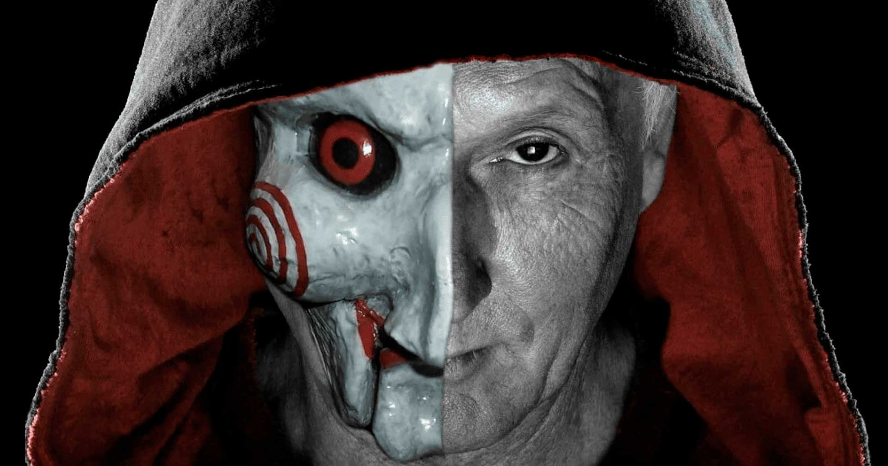

A saga "Jogos Mortais" gira em torno do psicopata John Kramer, o Jigsaw, que cria elaborados e sádicos "jogos" para forçar as pessoas a valorizarem suas vidas, através de atos dolorosos e mortais. A história começa com o primeiro filme (2004), onde o detetive Tapp investiga as armadilhas de Jigsaw, enquanto mais de uma década depois, o filme "Jogos Mortais X" (2023) revela eventos ocorridos entre os primeiros filmes, focando em Kramer buscando uma cura milagrosa para o seu cancro, sendo enganado por um grupo de vigaristas e transformando-os nas vítimas dos seus jogos.
Assista o trailer no youtube
